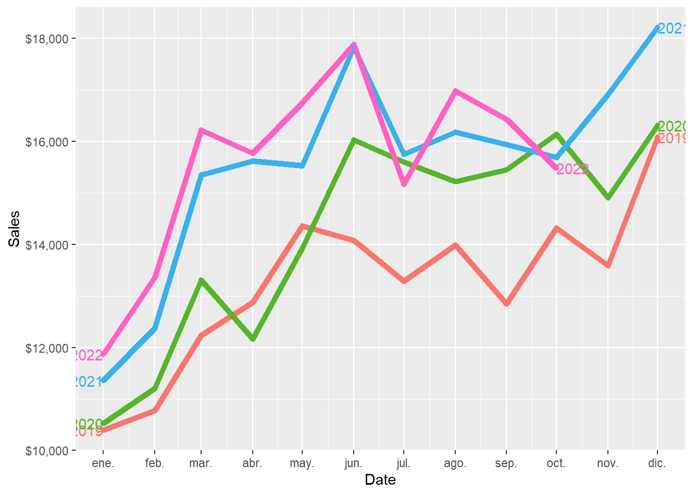
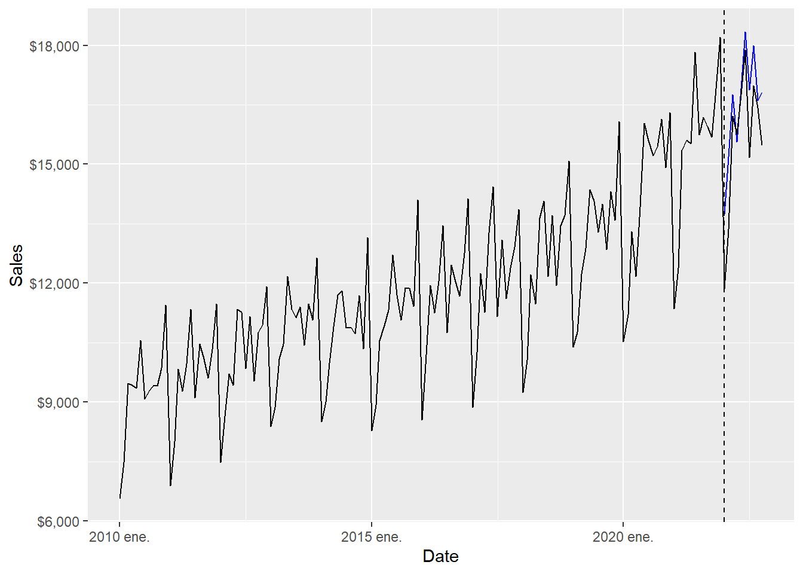
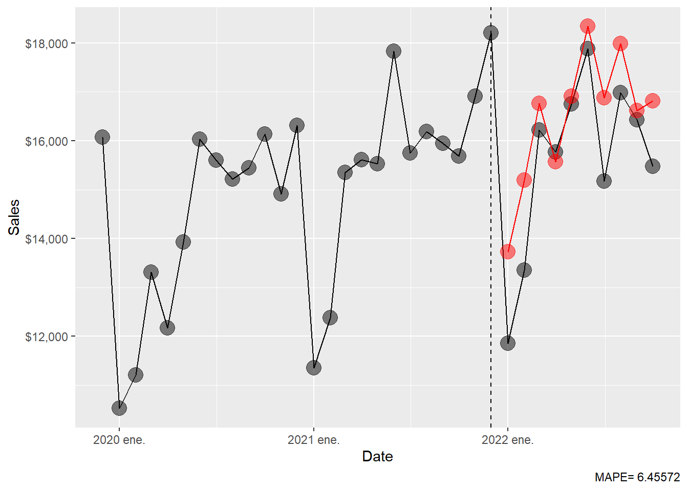
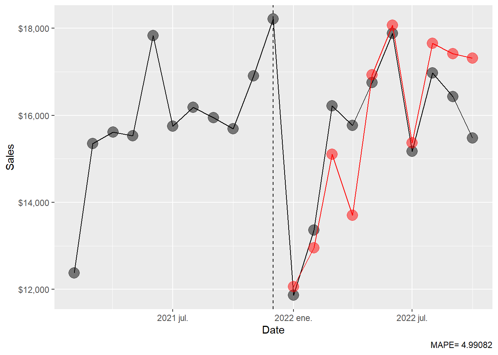
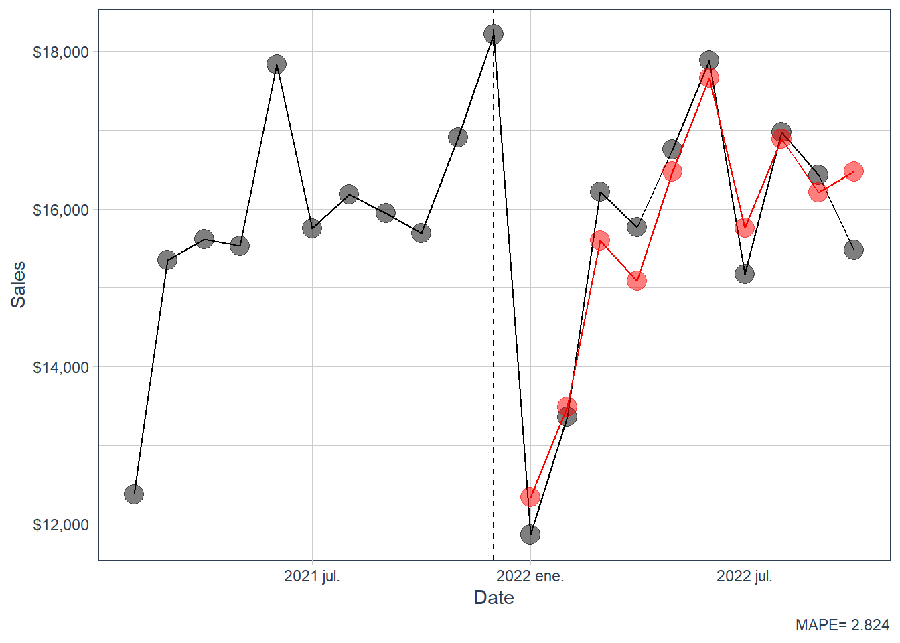

Forecasting with R
Abstract
This material relies on Hull (2020), Hyndman and Athanasopoulos (2021), and on Matt Dancho Business Science IO freely available codes in R that explains how to implement machine learning workflow using H2O. Some mathematical background is skipped to emphasize the data analysis, model logic, discussion, graphical approach and R coding (R Core Team 2024). As in the philosophy of Knuth (1984), the objective of this document is to explain to human beings what we want a computer to do as literate programming. This is a work in progress and it is under revision.
Back to Quantitative Finance with


Introduction.
Forecast methods are essential in business and finance for strategic decision-making, efficient resource allocation, and financial planning. Accurate forecasts enable organizations to identify and manage risks, attract investor confidence, stay competitive in the market, optimize supply chains, and evaluate performance against benchmarks. By anticipating changes in the business environment, businesses can adapt proactively and comply with regulatory requirements. Overall, forecasting provides a structured approach to planning, allowing businesses to navigate uncertainties and achieve long-term success.
1 The forecast problem.
The problem is to forecast a time series. In particular, the time series is the Beer, Wine, and Distilled Alcoholic Beverages Sales as in the original Matt Dancho’s example. The data is taken from FRED (Federal Reserve Economic Data). The data belongs to the non-durable goods category, it includes U.S. merchant wholesalers, except manufacturers’ sales branches and offices sales. The monthly time series goes from 2010-01-01 to 2022-10-31. And the goal is to use 2022 data (10 months) as a test data to conduct the forecast.
For the full database details see: https://fred.stlouisfed.org/series/S4248SM144NCEN
Before start, see: What is forecasting?
1.1 The data.
Let’s load the R packages.
Code
# Load libraries
library(fpp3)
library(h2o) # ML Library.
library(timetk) # Toolkit for working with time series in R.
library(tidyquant) # Loads tidyverse, financial pkgs, used to get data.
library(dplyr) # Database manipulation.
library(ggplot2) # Plots.
library(tibble) # Tables.
library(kableExtra) # Tables.
library(knitr)
library(bit64) # Useful in the machine learning workflow.
library(sweep) # Broom-style tidiers for the forecast package.
library(forecast) # Forecasting models and predictions package.
library(seasonal)
library(tictoc)We can conveniently download the data directly from the FRED API in one line of code.
Let’s have a look of the data set. By default it says price, but these are sales figures in monetary terms. According to the main FRED reference, these are in millions of dollars, not seasonally adjusted.
# A tibble: 6 × 3
symbol date price
<chr> <date> <int>
1 S4248SM144NCEN 2010-01-01 6558
2 S4248SM144NCEN 2010-02-01 7481
3 S4248SM144NCEN 2010-03-01 9475
4 S4248SM144NCEN 2010-04-01 9424
5 S4248SM144NCEN 2010-05-01 9351
6 S4248SM144NCEN 2010-06-01 10552We can change the name of the price column.
# A tibble: 6 × 3
symbol date sales
<chr> <date> <int>
1 S4248SM144NCEN 2022-05-01 16755
2 S4248SM144NCEN 2022-06-01 17882
3 S4248SM144NCEN 2022-07-01 15168
4 S4248SM144NCEN 2022-08-01 16977
5 S4248SM144NCEN 2022-09-01 16430
6 S4248SM144NCEN 2022-10-01 15480Better now.
Visualization is particularly important for time series analysis and forecasting. It’s a good idea to identify spots where we will split the data into training and test. This kind of split is consistent with most machine learning algorithms. The training dataset is the sample of data used to fit and train the model by learning from the data. The test dataset is the sample of data used to provide an unbiased evaluation of a final model fit on the training dataset. The test dataset provides the gold standard used to evaluate the model. It is only used once a model is completely trained. The test set is generally what is used to evaluate competing models.
It is also important to see the time series because normally the models will perform better if we can identify basic characteristics such as trend and seasonality. This data set clearly has a trend and a seasonality as people drink more alcohol in December.
Code
beer %>%
ggplot(aes(date, sales)) +
# Train Region:
annotate("text", x = ymd("2013-01-01"), y = 14000,
color = "black", label = "Train region") +
geom_rect(xmin = as.numeric(ymd("2022-01-01")),
xmax = as.numeric(ymd("2022-09-30")), ymin = 0, ymax = 20000,
alpha = 0.02, fill = "pink") +
annotate("text", x = ymd("2022-06-01"), y = 9000,
color = "black", label = "Test\nregion") +
# Data.
geom_line(col = "black") +
geom_point(col = "black", alpha = 0.5, size = 2) +
# Aesthetics.
theme_tq() +
scale_x_date(date_breaks = "1 year", date_labels = "%Y") +
labs(subtitle =
"Train (2010 - 2021), and test set (Jan 2022 to Oct 2022)",
x = "Date", y = "Sales",
caption = "The models do not know the test region, this is for us
to see how well the models do the 10-month ahead forecast.") +
scale_y_continuous(labels = scales::dollar)
Then, the problem is to forecast the 10 months of the test region. This is, from January to October 2022.
Here is a zoom version of the plot above.
Code
beer %>%
filter(date > as.Date("2020-01-01")) %>%
ggplot(aes(date, sales)) +
annotate("text", x = ymd("2020-08-01"), y = 17000,
color = "black", label = "Train region") +
geom_rect(xmin = as.numeric(ymd("2022-01-01")),
xmax = as.numeric(ymd("2022-09-30")), ymin = 0, ymax = 20000,
alpha = 0.02, fill = "pink") +
annotate("text", x = ymd("2022-05-01"), y = 14000,
color = "black", label = "Test region") +
geom_line(col = "black") +
geom_point(col = "black", alpha = 0.5, size = 5) +
theme_tq() +
scale_x_date(date_breaks = "1 year", date_labels = "%Y") +
labs(subtitle =
"Train (2010 - 2021) and test set (Jan 2022 to Oct 2022)",
x = "Date", y = "Sales",
caption = "The models do not know the test region, this is for us
to see how well the models do the 10-month ahead forecast.") +
scale_y_continuous(labels = scales::dollar)1.2 Time series properties.
The forecasting techniques are expected to exploit the time-series components like trend and seasonal component. Here we use the Hyndman and Athanasopoulos (2021) fpp3 package to learn about the time series properties before conducting the forecast techniques. In order to use the fpp3 package, we have to transform beer from a tibble to a tsibble object.
According to Hyndman and Athanasopoulos (2021), the X-11 method was originated in the US Census Bureau and further developed by Statistics Canada. The decomposition process tends to be highly robust to outliers and level shifts in the time series. The details of the X-11 method are described in Dagum and Bianconcini (2016).
Code
The trend shows a clear change in the first half of 2020. Let’s take a look of it.
Code
# A tsibble: 8 x 3 [1M]
date sales trend
<mth> <dbl> <dbl>
1 2020 mar. 13308 13656.
2 2020 abr. 12167 13728.
3 2020 may. 13925 13805.
4 2020 jun. 16032 13874.
5 2020 jul. 15598 15290.
6 2020 ago. 15217 15300.
7 2020 sep. 15449 15286.
8 2020 oct. 16139 15253.The consumption trend significantly increased from June 2020 to July 2020. It is big enough to create a discontinuity in the trend plot below.
Code
beer_tbls %>%
model(x11 = X_13ARIMA_SEATS(sales ~ x11())) %>%
components() %>%
select(date, trend) %>%
ggplot(aes(yearmonth(date), trend)) +
geom_point(alpha = 0.3, size = 4) +
geom_point(aes(x = yearmonth("2020 jun."), y = 13950.99),
alpha = 0.3, size = 4, colour = "red") +
geom_point(aes(x = yearmonth("2020 jul."), y = 15356.13),
alpha = 0.3, size = 4, colour = "red") +
labs(y = "Trend", x = "Date") +
scale_y_continuous(labels = scales::dollar)There are also three negative spikes in the irregular component.
Code
# A tsibble: 3 x 3 [1M]
date sales irregular
<mth> <dbl> <dbl>
1 2020 abr. 12167 0.889
2 2020 dic. 16309 0.867
3 2021 dic. 18211 0.909Code
beer_tbls %>%
model(x11 = X_13ARIMA_SEATS(sales ~ x11())) %>%
components() %>%
select(date, irregular) %>%
ggplot(aes(yearmonth(date), irregular)) +
geom_point(alpha = 0.3, size = 4) +
geom_point(aes(x = yearmonth("2020 apr."), y = 0.8894670),
alpha = 0.3, size = 4, colour = "red") +
geom_point(aes(x = yearmonth("2020 dec."), y = 0.8688517),
alpha = 0.3, size = 4, colour = "red") +
geom_point(aes(x = yearmonth("2021 dec."), y = 0.9099203),
alpha = 0.3, size = 4, colour = "red") +
labs(y = "Irregular", x = "Date") +
scale_y_continuous(labels = scales::dollar)Apparently, these trend and irregular events are consistent independently of the decomposition technique. We implement the SEATS decomposition below. SEATS stands for Seasonal Extraction in ARIMA Time Series. According to Hyndman and Athanasopoulos (2021), this procedure was developed at the Bank of Spain, and is now widely used by government agencies around the world. See Dagum and Bianconcini (2016) for further details.
Code
A seasonal plot is similar to a time plot except that the data are plotted against the individual seasons, in this case months, in which the data were observed.
Code
And this is the zoom version of the plot above.
Code

An alternative plot that emphasises the seasonal patterns is where the data for each month are collected together in separate mini time plots.
Code
December is the month of the year with the highest average sales, followed by June. January is the month of the year with the lowest average sales, followed by February.
Following Hyndman and Athanasopoulos (2021), just as correlation measures the extent of a linear relationship between two variables, autocorrelation measures the linear relationship between lagged values of a time series. When data have a trend, the autocorrelations for small lags tend to be large and positive because observations nearby in time are also nearby in value. So the ACF of a trended time series tends to have positive values that slowly decrease as the lags increase. When data are seasonal, the autocorrelations will be larger for the seasonal lags (at multiples of the seasonal period, in this case 12) than for other lags.
Beer sales is both trended and seasonal. The slow decrease in the ACF as the lags increase is due to the trend, while the scalloped shape is due to the seasonality.
2 Forecasts with fpp3.
Here we implement some selected forecast techniques using the Hyndman and Athanasopoulos (2021) fpp3 package. First define the training and test set (2022).
2.1 Four simple techniques.
Let’s estimate four simple forecast techniques. Mean, where the forecasts of all future values are equal to the average of the historical data. Naïve, we set all forecasts to be the value of the last observation. Seasonal naïve, we set each forecast to be equal to the last observed value from the same season. And drift, to allow the forecasts to increase or decrease over time.
Estimate the four models.
Code
# A tibble: 4 × 2
.model sigma2
<chr> <dbl>
1 fpp3: mean 5421556.
2 fpp3: naïve 3256821.
3 fpp3: seasonal naïve 494516.
4 fpp3: drift 3256821.The 10-month forecasts.
Let’s compute the MAPE of all forecasts.
Code
# A tibble: 4 × 2
.model MAPE
<chr> <dbl>
1 fpp3: seasonal naïve 3.82
2 fpp3: naïve 18.4
3 fpp3: drift 21.2
4 fpp3: mean 23.4 Code
MAPE
3.8227 Let’s plot the forecast results.
Code
The plot above is not very clear. Here is a zoom version.
Code
beer_zoom <- beer_tbls %>%
select(date, sales) %>%
filter_index("2019-12" ~ .)
beer_fc %>%
autoplot(beer_zoom, level = NULL, lwd = 2) +
geom_vline(xintercept = as.Date("2022-01-01"), lty = 2) +
labs(y = "Sales", x = "Date") +
guides(colour = guide_legend(title = "Forecast:")) +
theme(legend.position = "bottom")This is the seasonal naïve forecasts.
Code
beer_zoom <- beer_tbls %>%
select(date, sales) %>%
filter_index("2019-12" ~ .)
beer_sn_fc <- beer_fc %>%
filter(.model == "fpp3: seasonal naïve")
ggplot(beer_zoom, aes(yearmonth(date), sales), lwd = 2, alpha = 0.4) +
geom_line() +
geom_point(size = 5, color = "black", alpha = 0.5,
shape = 21, fill = "black") +
geom_point(aes(y = .mean), size = 5,
color = "red", alpha = 0.5, shape = 21,
fill = "red", data = beer_sn_fc) +
geom_line(aes(y = .mean), color = "red", size = 0.5, data = beer_sn_fc) +
geom_vline(xintercept = as.numeric(as.Date("2021-12-01")),
linetype = 2) +
labs(y = "Sales", x = "Date",
caption = c(paste("MAPE=",(round(sn_mape, 5))))) +
theme(legend.position = "bottom") +
scale_y_continuous(labels = scales::dollar)The simple techniques are not necessarily bad techniques.
2.2 Exponential smoothing.
According to Hyndman and Athanasopoulos (2021), forecasts produced using exponential smoothing methods are weighted averages of past observations, with the weights decaying exponentially as the observations get older. In other words, the more recent the observation the higher the associated weight. This framework generates reliable forecasts quickly and for a wide range of time series, which is a great advantage and of major importance to applications in industry.
In this subsection, we let the ETS() function select the model by minimising the AICc.
Series: sales
Model: ETS(M,A,M)
Smoothing parameters:
alpha = 0.1373209
beta = 0.007857297
gamma = 0.0001009044
Initial states:
l[0] b[0] s[0] s[-1] s[-2] s[-3] s[-4] s[-5]
9248.863 36.43808 1.16685 1.032394 1.036934 0.9931007 1.050443 0.9914501
s[-6] s[-7] s[-8] s[-9] s[-10] s[-11]
1.126832 1.063497 0.962376 0.9818587 0.8336701 0.7605934
sigma^2: 0.0021
AIC AICc BIC
2536.488 2541.345 2586.975 The ETS(M,A,M) corresponds to a Holt-Winters multiplicative method with multiplicative errors for when seasonal variations are changing proportional to the level of the series.
Code
The ETS(M,A,M) 10-month forecast.
# A fable: 10 x 4 [1M]
# Key: .model [1]
.model date sales .mean
<chr> <mth> <dist> <dbl>
1 ETS(sales) 2022 ene. N(12195, 308029) 12195.
2 ETS(sales) 2022 feb. N(13442, 382116) 13442.
3 ETS(sales) 2022 mar. N(15922, 548113) 15922.
4 ETS(sales) 2022 abr. N(15694, 545333) 15694.
5 ETS(sales) 2022 may. N(17440, 690624) 17440.
6 ETS(sales) 2022 jun. N(18582, 805158) 18582.
7 ETS(sales) 2022 jul. N(16440, 648106) 16440.
8 ETS(sales) 2022 ago. N(17514, 757379) 17514.
9 ETS(sales) 2022 sep. N(16649, 705523) 16649.
10 ETS(sales) 2022 oct. N(17479, 8e+05) 17479.The ETS(M,A,M) MAPE.
Code
MAPE
3.950335 Let’s see the ETS(M,A,M) forecast.
Code
This is not very clear, here is the zoom version.
Code
ggplot(beer_zoom, aes(yearmonth(date), sales), lwd = 2, alpha = 0.4) +
geom_line() +
geom_point(size = 5, color = "black", alpha = 0.5,
shape = 21, fill = "black") +
geom_point(aes(y = .mean), size = 5,
color = "red", alpha = 0.5, shape = 21,
fill = "red", data = beer_ets_fc) +
geom_line(aes(y = .mean), color = "red", size = 0.5, data = beer_ets_fc) +
geom_vline(xintercept = as.numeric(as.Date("2021-12-01")),
linetype = 2) +
labs(x = "Date", y = "Sales",
caption = c(paste("MAPE=",(round(ets_mape, 5))))) +
theme(legend.position = "bottom") +
scale_y_continuous(labels = scales::dollar)Update the MAPE table.
2.3 ARIMA.
According to Hyndman and Athanasopoulos (2021), while exponential smoothing models are based on a description of the trend and seasonality in the data, ARIMA models aim to describe the autocorrelations in the data. The ARIMA() function combines unit root tests, minimisation of the AICc and MLE to obtain an ARIMA model. By setting stepwise = FALSE and approximation = FALSE, we are making R work extra hard to find a good model.
Code
Series: sales
Model: ARIMA(4,1,1)(0,1,1)[12]
Coefficients:
ar1 ar2 ar3 ar4 ma1 sma1
-0.0687 -0.0138 0.2292 -0.3335 -0.7658 -0.6764
s.e. 0.1075 0.1057 0.0966 0.0843 0.0840 0.1030
sigma^2 estimated as 310112: log likelihood=-1015.76
AIC=2045.52 AICc=2046.43 BIC=2065.64The residuals for the best ARIMA model.
The forecast for the best ARIMA model.
# A fable: 10 x 4 [1M]
# Key: .model [1]
.model date sales .mean
<chr> <mth> <dist> <dbl>
1 arima_auto 2022 ene. N(12647, 310136) 12647.
2 arima_auto 2022 feb. N(14311, 318632) 14311.
3 arima_auto 2022 mar. N(15821, 332187) 15821.
4 arima_auto 2022 abr. N(15644, 394100) 15644.
5 arima_auto 2022 may. N(17073, 4e+05) 17073.
6 arima_auto 2022 jun. N(18020, 412913) 18020.
7 arima_auto 2022 jul. N(16766, 432703) 16766.
8 arima_auto 2022 ago. N(17366, 433275) 17366.
9 arima_auto 2022 sep. N(16620, 463370) 16620.
10 arima_auto 2022 oct. N(17365, 475081) 17365.The best ARIMA MAPE.
Code
MAPE
4.579835 Let’s plot the forecast results.
Code
The plot above is not very clear. Here is a zoom version.
Code
ggplot(beer_zoom, aes(yearmonth(date), sales), lwd = 2, alpha = 0.4) +
geom_line() +
geom_point(size = 5, color = "black", alpha = 0.5,
shape = 21, fill = "black") +
geom_point(aes(y = .mean), size = 5,
color = "red", alpha = 0.5, shape = 21,
fill = "red", data = beer_arima_fc) +
geom_line(aes(y = .mean), color = "red", size = 0.5, data = beer_arima_fc) +
geom_vline(xintercept = as.numeric(as.Date("2021-12-01")),
linetype = 2) +
labs(x = "Date", y = "Sales",
caption = c(paste("MAPE=",(round(arima_mape, 5))))) +
theme(legend.position = "bottom") +
scale_y_continuous(labels = scales::dollar)Update the MAPE table.
Code
# A tibble: 6 × 2
.model MAPE
<chr> <dbl>
1 fpp3: seasonal naïve 3.82
2 fpp3: ETS(M,A,M) 3.95
3 fpp3: ARIMA(4,1,1)(0,1,1)[12] 4.58
4 fpp3: naïve 18.4
5 fpp3: drift 21.2
6 fpp3: mean 23.4 2.4 Neural network.
Artificial neural networks are forecasting methods that are based on simple mathematical models of the brain. They allow complex nonlinear relationships between the response variable and its predictors. With time series data, lagged values of the time series can be used as inputs to a neural network, just as we used lagged values in a linear autoregression model. We call this a neural network autoregression or NNAR model.
Series: sales
Model: NNAR(15,1,8)[12]
Average of 20 networks, each of which is
a 15-8-1 network with 137 weights
options were - linear output units
sigma^2 estimated as 971.7The NNAR(15,1,8)[12] model has inputs \(y_{t−1}, y_{t−2},..., y_{t−15}\) and 8 neurons in the hidden layer.
The forecast for the best NNAR model.
# A fable: 10 x 4 [1M]
# Key: .model [1]
.model date sales .mean
<chr> <mth> <dist> <dbl>
1 NNETAR(sales) 2022 ene. sample[5000] 13734.
2 NNETAR(sales) 2022 feb. sample[5000] 15194.
3 NNETAR(sales) 2022 mar. sample[5000] 16761.
4 NNETAR(sales) 2022 abr. sample[5000] 15569.
5 NNETAR(sales) 2022 may. sample[5000] 16905.
6 NNETAR(sales) 2022 jun. sample[5000] 18337.
7 NNETAR(sales) 2022 jul. sample[5000] 16878.
8 NNETAR(sales) 2022 ago. sample[5000] 17990.
9 NNETAR(sales) 2022 sep. sample[5000] 16612.
10 NNETAR(sales) 2022 oct. sample[5000] 16816.The best NNET MAPE.
Code
MAPE
6.45572 Let’s plot the forecast results.
Code

The plot above is not very clear. Here is a zoom version.
Code
ggplot(beer_zoom, aes(yearmonth(date), sales), lwd = 2, alpha = 0.4) +
geom_line() +
geom_point(size = 5, color = "black", alpha = 0.5,
shape = 21, fill = "black") +
geom_point(aes(y = .mean), size = 5,
color = "red", alpha = 0.5, shape = 21,
fill = "red", data = beer_nnet_fc) +
geom_line(aes(y = .mean), color = "red", size = 0.5, data = beer_nnet_fc) +
geom_vline(xintercept = as.numeric(as.Date("2021-12-01")),
linetype = 2) +
labs(x = "Date", y = "Sales",
caption = c(paste("MAPE=",(round(nnet_mape, 5))))) +
theme(legend.position = "bottom") +
scale_y_continuous(labels = scales::dollar)
Update the MAPE table.
Code
# A tibble: 7 × 2
.model MAPE
<chr> <dbl>
1 fpp3: seasonal naïve 3.82
2 fpp3: ETS(M,A,M) 3.95
3 fpp3: ARIMA(4,1,1)(0,1,1)[12] 4.58
4 fpp3: NNAR(15,1,8)[12] 6.46
5 fpp3: naïve 18.4
6 fpp3: drift 21.2
7 fpp3: mean 23.4 3 Forecasts with h2o.
As in the previous section, the problem is to forecast a time series. In particular, the time series is the Beer, Wine, and Distilled Alcoholic Beverages Sales as in the original Matt Dancho’s example. The data is taken from FRED (Federal Reserve Economic Data). The data belongs to the non-durable goods category, it includes U.S. merchant wholesalers, except manufacturers’ sales branches and offices sales. The monthly time series goes from 2010-01-01 to 2022-10-31. And the goal is to use 2022 data (10 months) as a test data to conduct the forecast.
For the full database details see: https://fred.stlouisfed.org/series/S4248SM144NCEN
Let’s load the R packages.
Code
# Load libraries
library(fpp3)
library(h2o) # ML Library.
library(timetk) # Toolkit for working with time series in R.
library(tidyquant) # Loads tidyverse, financial pkgs, used to get data.
library(dplyr) # Database manipulation.
library(ggplot2) # Plots.
library(tibble) # Tables.
library(kableExtra) # Tables.
library(knitr)
library(bit64) # Useful in the machine learning workflow.
library(sweep) # Broom-style tidiers for the forecast package.
library(forecast) # Forecasting models and predictions package.
library(seasonal)
library(tictoc)We can conveniently download the data directly from the FRED API in one line of code.
Let’s have a look of the data set. By default it says price, but these are sales figures in monetary terms. According to the main FRED reference, these are in millions of dollars, not seasonally adjusted.
# A tibble: 6 × 3
symbol date price
<chr> <date> <int>
1 S4248SM144NCEN 2010-01-01 6558
2 S4248SM144NCEN 2010-02-01 7481
3 S4248SM144NCEN 2010-03-01 9475
4 S4248SM144NCEN 2010-04-01 9424
5 S4248SM144NCEN 2010-05-01 9351
6 S4248SM144NCEN 2010-06-01 10552We can change the name of the price column.
# A tibble: 6 × 3
symbol date sales
<chr> <date> <int>
1 S4248SM144NCEN 2022-05-01 16755
2 S4248SM144NCEN 2022-06-01 17882
3 S4248SM144NCEN 2022-07-01 15168
4 S4248SM144NCEN 2022-08-01 16977
5 S4248SM144NCEN 2022-09-01 16430
6 S4248SM144NCEN 2022-10-01 15480Better now.
3.1 The h2o package.
Machine learning is the study of computer algorithms that improve automatically through experience. There are many ways and approaches to implement machine learning especially in time series forecasts purposes. This document heavily relies on h2o library. The h2o package is a product offered by H2O.ai that contains a number of cutting edge machine learning algorithms, performance metrics, and auxiliary functions to make machine learning both powerful and easy to implement.
One of the most important features of this package is the h2o.automl() (Automatic Machine Learning). H2O’s AutoML can be used for automating the machine learning workflow, which includes automatic training and tuning of many models within a user-specified time-limit. Stacked Ensembles – one based on all previously trained models, another one on the best model of each family – will be automatically trained on collections of individual models to produce highly predictive ensemble models which, in most cases, will be the top performing models in the AutoML Leaderboard. We can verify this in the example below.
This document has limited explanations about the applied machine learning techniques. The value of this document is to gather several examples that are originally presented separately in Business Science IO and R-bloggers. sites and extend the analysis to elaborate further on the code logic and interpretation. It can also be useful to better understand how the R functions work, how results are produced, and it could help to replicate a different example with a new database for those who are new in the field.
You have to download and install H2O. Click here for full instructions. You are also expected to review the H2O webpage contents because they have important information that will allow you to better understand the value of this machine learning tool.
The main objective here is to use h2o locally (in your own computer) to develop a high accuracy time series model on the beer data set. This is a supervised machine learning regression problem. An interesting reference to learn the basics of supervised and unsupervised machine learning techniques applied to business is: Hull (2020).
3.2 The data.
We need an additional data set. The validation dataset is the sample of data used to provide an unbiased evaluation of a model fit on the training dataset while tuning model hyperparameters. The new datasets are the following.
Code
beer %>%
ggplot(aes(date, sales)) +
# Train Region:
annotate("text", x = ymd("2013-01-01"), y = 14000,
color = "black", label = "Train region") +
# Validation Region:
geom_rect(xmin = as.numeric(ymd("2021-01-01")),
xmax = as.numeric(ymd("2021-12-31")), ymin = 0, ymax = 20000,
alpha = 0.01, fill = "purple") +
annotate("text", x = ymd("2021-04-01"), y = 7000,
color = "black", label = "Validation\nregion") +
# Test Region:
geom_rect(xmin = as.numeric(ymd("2022-01-01")),
xmax = as.numeric(ymd("2022-09-30")), ymin = 0, ymax = 20000,
alpha = 0.02, fill = "pink") +
annotate("text", x = ymd("2022-06-01"), y = 9000,
color = "black", label = "Test\nregion") +
# Data.
geom_line(col = "black") +
geom_point(col = "black", alpha = 0.5, size = 2) +
# Aesthetics.
theme_tq() +
scale_x_date(date_breaks = "1 year", date_labels = "%Y") +
labs(subtitle =
"Train (2010 - 2020), validation (2021), and test set (Jan 2022 to Oct 2022)",
x = "Date", y = "Sales",
caption = "The models do not know the test region, this is for us
to see how well the models do the 10-month ahead forecast.") +
scale_y_continuous(labels = scales::dollar)And the corresponding zoom version.
Code
beer %>%
filter(date > as.Date("2020-01-01")) %>%
ggplot(aes(date, sales)) +
# Train Region:
annotate("text", x = ymd("2020-08-01"), y = 14000,
color = "black", label = "Train region") +
# Validation Region:
geom_rect(xmin = as.numeric(ymd("2021-01-01")),
xmax = as.numeric(ymd("2021-12-31")), ymin = 0, ymax = 20000,
alpha = 0.01, fill = "purple") +
annotate("text", x = ymd("2021-07-01"), y = 14000,
color = "black", label = "Validation region") +
# Test Region:
geom_rect(xmin = as.numeric(ymd("2022-01-01")),
xmax = as.numeric(ymd("2022-09-30")), ymin = 0, ymax = 20000,
alpha = 0.02, fill = "pink") +
annotate("text", x = ymd("2022-05-01"), y = 14000,
color = "black", label = "Test region") +
# Data.
geom_line(col = "black") +
geom_point(col = "black", alpha = 0.5, size = 5) +
# Aesthetics.
theme_tq() +
scale_x_date(date_breaks = "1 year", date_labels = "%Y") +
labs(subtitle =
"Train (2010 - 2020), validation (2021), and test set (Jan 2022 to Oct 2022)",
x = "Date", y = "Sales",
caption = "The models do not know the test region, this is for us
to see how well the models do the 10-month ahead forecast.") +
scale_y_continuous(labels = scales::dollar)The tk_augment_timeseries_signature() function expands out the timestamp information column-wise into a machine learning feature set, adding columns of time series information to the original data frame. We’ll again use head() function for quick inspection of this expansion. See how there are now 31 features extracted from the original database. Not all will be important for the final and chosen models, but some will.
Code
# A tibble: 6 × 31
symbol date sales index.num diff year year.iso half quarter month
<chr> <date> <int> <dbl> <dbl> <int> <int> <int> <int> <int>
1 S4248SM1… 2022-05-01 16755 1.65e9 2.59e6 2022 2022 1 2 5
2 S4248SM1… 2022-06-01 17882 1.65e9 2.68e6 2022 2022 1 2 6
3 S4248SM1… 2022-07-01 15168 1.66e9 2.59e6 2022 2022 2 3 7
4 S4248SM1… 2022-08-01 16977 1.66e9 2.68e6 2022 2022 2 3 8
5 S4248SM1… 2022-09-01 16430 1.66e9 2.68e6 2022 2022 2 3 9
6 S4248SM1… 2022-10-01 15480 1.66e9 2.59e6 2022 2022 2 4 10
# ℹ 21 more variables: month.xts <int>, month.lbl <ord>, day <int>, hour <int>,
# minute <int>, second <int>, hour12 <int>, am.pm <int>, wday <int>,
# wday.xts <int>, wday.lbl <ord>, mday <int>, qday <int>, yday <int>,
# mweek <int>, week <int>, week.iso <int>, week2 <int>, week3 <int>,
# week4 <int>, mday7 <int>The variable (column) names beer_aug are:
[1] "symbol" "date" "sales" "index.num" "diff" "year"
[7] "year.iso" "half" "quarter" "month" "month.xts" "month.lbl"
[13] "day" "hour" "minute" "second" "hour12" "am.pm"
[19] "wday" "wday.xts" "wday.lbl" "mday" "qday" "yday"
[25] "mweek" "week" "week.iso" "week2" "week3" "week4"
[31] "mday7" Note how we went from 3 columns in beer to 31 columns in beer_aug.
We need to prepare the data in a format for H2O. First, let’s remove any unnecessary columns such as dates or those with missing values, and change the ordered classes to plain factors. We prefer dplyr operations for these steps. Sometimes we do not need to implement this step as the data is already clean (as in this case), but sometimes it is not. Thus, let’s clean the data.
Code
# A tibble: 6 × 29
symbol sales index.num year year.iso half quarter month month.xts month.lbl
<chr> <int> <dbl> <int> <int> <int> <int> <int> <int> <fct>
1 S4248S… 6558 1.26e9 2010 2009 1 1 1 0 enero
2 S4248S… 7481 1.26e9 2010 2010 1 1 2 1 febrero
3 S4248S… 9475 1.27e9 2010 2010 1 1 3 2 marzo
4 S4248S… 9424 1.27e9 2010 2010 1 2 4 3 abril
5 S4248S… 9351 1.27e9 2010 2010 1 2 5 4 mayo
6 S4248S… 10552 1.28e9 2010 2010 1 2 6 5 junio
# ℹ 19 more variables: day <int>, hour <int>, minute <int>, second <int>,
# hour12 <int>, am.pm <int>, wday <int>, wday.xts <int>, wday.lbl <fct>,
# mday <int>, qday <int>, yday <int>, mweek <int>, week <int>,
# week.iso <int>, week2 <int>, week3 <int>, week4 <int>, mday7 <int>The database did not change too much. Now we have 29 columns in beer_clean. In the case of two variables, the structure ordered factors <ord> changed into factors <fct>, which is necessary for some H2O functions.
Let’s split the database into a training, validation and test sets following the time ranges in the visualization above. These training sets are the way most machine learning algorithms can be implemented and evaluated. We normally take more observations for the training, and less observations for the validation and test. The test set (the most recent dates) is unknown in the learning process of the models, the test set will be useful for us to be able to compare forecasts versus what really happened. This is how we can measure out-of-sample estimation errors.
These are the 10-months we are interested to forecast.
Code
[1] 11862 13358 16216 15766 16755 17882 15168 16977 16430 15480Our goal is to forecast the first 10 months of 2022.
3.3 Prepare for H2O.
First, fire up H2O. This will initialize the Java Virtual Machine (JVM) that H2O uses locally. In simple terms, here your local computer will remotely connect to a high-power clusters to do the H2O machine learning job. This is not only amazing, it is also free.
H2O is not running yet, starting it now...
Note: In case of errors look at the following log files:
C:\Users\ML\AppData\Local\Temp\RtmpeIDv38\file4e3c605865f7/h2o_ML_started_from_r.out
C:\Users\ML\AppData\Local\Temp\RtmpeIDv38\file4e3c20c854f9/h2o_ML_started_from_r.err
Starting H2O JVM and connecting: .. Connection successful!
R is connected to the H2O cluster:
H2O cluster uptime: 9 seconds 853 milliseconds
H2O cluster timezone: America/Mexico_City
H2O data parsing timezone: UTC
H2O cluster version: 3.42.0.2
H2O cluster version age: 5 months and 14 days
H2O cluster name: H2O_started_from_R_ML_ctt216
H2O cluster total nodes: 1
H2O cluster total memory: 3.52 GB
H2O cluster total cores: 4
H2O cluster allowed cores: 4
H2O cluster healthy: TRUE
H2O Connection ip: localhost
H2O Connection port: 54321
H2O Connection proxy: NA
H2O Internal Security: FALSE
R Version: R version 4.3.2 (2023-10-31 ucrt) We need the data sets in a format that can be readable by H2O. This is an easy step.
Let’s list the names of the variables.
Code
[1] "symbol" "sales" "index.num" "year" "year.iso" "half"
[7] "quarter" "month" "month.xts" "month.lbl" "day" "hour"
[13] "minute" "second" "hour12" "am.pm" "wday" "wday.xts"
[19] "wday.lbl" "mday" "qday" "yday" "mweek" "week"
[25] "week.iso" "week2" "week3" "week4" "mday7" The h2o.automl() is a function in H2O that automates the process of building a large number of models, with the goal of finding the best model without any prior knowledge or effort by the data scientist. The alternative of using h2o.automl() is to pick some models according to the database characteristics, implement the models, and pick the one with the best performance according to some evaluation criterion. This alternative is time consuming and it could use an intensive computational memory and power, this is why H2O is valuable.
The available algorithms that h2o.automl() currently run and compare are (click on each one to see a full description):
- Distributed Random Forest (DRF).
- Generalized Linear Model (GLM).
- XGBoost.
- Gradient Boosting Machine (GBM).
- Deep Learning (Neural Networks).
- Stacked Ensembles.
When we implement h2o.automl() function, H2O test for the six algorithms listed above. Each algorithm includes many other models that belongs to these algorithms in the machine learning process. The result of h2o.automl() is one model that belongs to one algorithm. This is the difference between forecasting techniques, algorithms, and models.
3.4 Estimate H2O models.
Here, we implement the h2o.automl() in three different ways because of reproducibility issues. Reproducibility means obtaining consistent computational results using the same input data, computational steps, methods, code, and conditions of analysis. It turns out that Deep Learning cannot be reproducible by construction. Then, we first apply h2o.automl() without Deep Learning. Second, we apply h2o.automl() with only Deep Learning, here the results will be different each time we run the code. And third, including all available algorithms in h2o.automl(), again, the results might change every time we run the code. The first is the only one which can be reproducible and the other two are expected to change every time we run the R code.
Please note that in the code below we set exclude_algos to exclude Deep Learning, and seed = 13 to make sure every time we run the code we can get the same results.
Code
# It takes some time to run.
tic("inner1")
automl_models_h2o <- h2o.automl(x = x, y = y, training_frame = train_h2o,
validation_frame = valid_h2o, leaderboard_frame = test_h2o,
exclude_algos = c("DeepLearning"), # without Deep Learning.
#max_models = 10, # We can adjust this to save time.
max_runtime_secs = 60, stopping_metric = "RMSE", seed = 13,
verbosity = NULL)
t_inner1 <- toc()inner1: 505.81 sec elapsedAfter 8.43 minutes running, the selected model by h2o.automl() is:
[1] "stackedensemble"See why stackedensemble was the chosen one. Model rankings: h2o.automl() without Deep Learning algorithm.
Code
model_id rmse
1 StackedEnsemble_BestOfFamily_3_AutoML_1_20240109_00755 1048.771
2 StackedEnsemble_BestOfFamily_5_AutoML_1_20240109_00755 1061.491
3 GBM_grid_1_AutoML_1_20240109_00755_model_39 1199.115
4 StackedEnsemble_BestOfFamily_4_AutoML_1_20240109_00755 1215.447
5 GBM_grid_1_AutoML_1_20240109_00755_model_219 1263.118
6 GBM_grid_1_AutoML_1_20240109_00755_model_64 1263.946
7 GBM_grid_1_AutoML_1_20240109_00755_model_118 1319.513
8 StackedEnsemble_Best1000_1_AutoML_1_20240109_00755 1354.083
9 StackedEnsemble_AllModels_5_AutoML_1_20240109_00755 1360.523
10 StackedEnsemble_AllModels_3_AutoML_1_20240109_00755 1360.523The model_id column list the top 10 models with the lowest errors. The value of h2o.automl() is that we can take the best model and use it to conduct our forecast. Remember we proposed to run h2o.automl() three times. Now let’s consider the second alternative (only Deep Learning). There are several ways to implement Deep Learning, this is why it makes sense to use only this family into the h2o.automl() function. Deep Learning cannot be reproducible by construction so adding a seed in this case would be useless.
Code
inner2: 183.33 sec elapsedAfter 3.06 minutes running, the selected Deep Learning model by h2o.automl() is:
See why this specific deeplearning model was the chosen one. Model rankings: h2o.automl() with only Deep Learning algorithm.
model_id rmse
1 DeepLearning_grid_1_AutoML_2_20240109_01621_model_2 1028.497
2 DeepLearning_grid_1_AutoML_2_20240109_01621_model_1 1212.859
3 DeepLearning_grid_1_AutoML_2_20240109_01621_model_4 1489.465
4 DeepLearning_grid_1_AutoML_2_20240109_01621_model_6 1826.080
5 DeepLearning_grid_1_AutoML_2_20240109_01621_model_7 1859.433
6 DeepLearning_grid_1_AutoML_2_20240109_01621_model_5 1895.855
7 DeepLearning_grid_1_AutoML_2_20240109_01621_model_3 2068.979
8 DeepLearning_1_AutoML_2_20240109_01621 2374.515All models belong to the same algorithm, but we clearly choose the first one of the list. The machine learning workflow estimate a number of models using the train region and evaluate them using the validation region. The estimated model parameters then change as they learn from their mistakes. This process is repeated until a specific restriction meets, in this case max_runtime_secs is set to 60 seconds. At the end, we select the best ranked model.
Now let’s consider the third alternative. This is, run h2o.automl() with no restrictions at all. Here, it would be interesting to see if this led to the best alternative. In principle, we cannot anticipate which one of these three runs will be the best. This is because the Deep Learning algorithm has a random component which might lead to better results, and remember the second round was exclusive for Deep Learning and the third includes Deep Learning. Then, every time I compile this document or run this R code we should expect different results in the second and third alternative.
Code
inner3: 511.15 sec elapsedAfter 8.52 minutes running, the selected model by h2o.automl() is:
Code
[1] "stackedensemble"See why c model was the chosen one in this specific and unique code compilation. Model rankings: h2o.automl with all available algorithms
model_id rmse
1 StackedEnsemble_BestOfFamily_3_AutoML_3_20240109_01927 1071.224
2 DeepLearning_grid_1_AutoML_3_20240109_01927_model_2 1320.492
3 GBM_grid_1_AutoML_3_20240109_01927_model_65 1330.039
4 StackedEnsemble_AllModels_3_AutoML_3_20240109_01927 1389.254
5 GBM_grid_1_AutoML_3_20240109_01927_model_56 1402.098
6 GBM_grid_1_AutoML_3_20240109_01927_model_9 1406.070
7 StackedEnsemble_AllModels_4_AutoML_3_20240109_01927 1417.645
8 GBM_grid_1_AutoML_3_20240109_01927_model_115 1423.343
9 GBM_grid_1_AutoML_3_20240109_01927_model_5 1426.755
10 GBM_grid_1_AutoML_3_20240109_01927_model_121 1435.739Let’s summarize the results according to the root mean square error rmse as this was the criterion in stopping_metric. The table shows the best ranked model according to our three different runs of h2o.automl().
Code
# Collect model names and the rmse.
without_DL <- c(automl_leader@algorithm,
round(automl_models_h2o@leaderboard[1, 2], 2))
only_DL <- c(automl_DL@algorithm,
round(DL@leaderboard[1,2], 2))
all <- c(automl_leader_all@algorithm,
round(automl_models_h2o_all@leaderboard[1, 2], 2))
# Three different runs of h2o.automl.
automl_three <- data.frame(without_DL, only_DL, all)
colnames(automl_three) <- c("Without Deep Learning", "Only Deep Learning",
"All algorithms")
kable(automl_three,
caption = "Top ranked models: h2o.automl rmse.") %>%
kable_styling(latex_options = "HOLD_position")| Without Deep Learning | Only Deep Learning | All algorithms |
|---|---|---|
| stackedensemble | deeplearning | stackedensemble |
| 1048.77 | 1028.5 | 1071.22 |
This is interesting because this suggest that it makes sense to run the H2O more than one time. It would be good to test for a different stopping_metric, max_runtime_secs and max_models.
3.5 Predictions.
Here are the forecasts.
Let’s show the results in a table. First, the case without Deep Learning.
Code
# 10-period forecast error: h2o.automl without Deep Learning.
error_tbl <- beer %>%
filter(lubridate::year(date) == 2022) %>%
add_column(pred = pred_h2o %>% as_tibble() %>% pull(predict)) %>%
rename(actual = sales) %>%
mutate(error = actual - pred, error_pct = error / actual)
kable(error_tbl,
caption = "Detailed performance: h2o.automl without Deep Learning algorithm.",
digits = 3, row.names = TRUE) %>%
kable_styling(latex_options = "HOLD_position")| symbol | date | actual | pred | error | error_pct | |
|---|---|---|---|---|---|---|
| 1 | S4248SM144NCEN | 2022-01-01 | 11862 | 11930.03 | -68.035 | -0.006 |
| 2 | S4248SM144NCEN | 2022-02-01 | 13358 | 12807.85 | 550.151 | 0.041 |
| 3 | S4248SM144NCEN | 2022-03-01 | 16216 | 15018.13 | 1197.874 | 0.074 |
| 4 | S4248SM144NCEN | 2022-04-01 | 15766 | 14151.34 | 1614.659 | 0.102 |
| 5 | S4248SM144NCEN | 2022-05-01 | 16755 | 15760.85 | 994.146 | 0.059 |
| 6 | S4248SM144NCEN | 2022-06-01 | 17882 | 16255.50 | 1626.499 | 0.091 |
| 7 | S4248SM144NCEN | 2022-07-01 | 15168 | 14577.47 | 590.527 | 0.039 |
| 8 | S4248SM144NCEN | 2022-08-01 | 16977 | 16029.08 | 947.916 | 0.056 |
| 9 | S4248SM144NCEN | 2022-09-01 | 16430 | 15168.44 | 1261.562 | 0.077 |
| 10 | S4248SM144NCEN | 2022-10-01 | 15480 | 15901.02 | -421.019 | -0.027 |
The forecast looks good. Note that in some cases it over-estimate and in others under-estimate the real values, but in general these differences are small. Now, let’s look at the same information in a plot.
Code
beer %>%
filter(date > as.Date("2021-01-01")) %>%
ggplot(aes(x = yearmonth(date), y = sales)) +
# Data.
geom_point(size = 5, color = "black", alpha = 0.5,
shape = 21, fill = "black") +
geom_line(color = "black", size = 0.5) +
# Predictions.
geom_point(aes(y = pred), size = 5,
color = "red", alpha = 0.5, shape = 21,
fill = "red", data = error_tbl) +
geom_line(aes(y = pred), color = "red", size = 0.5, data = error_tbl) +
geom_vline(xintercept = as.numeric(as.Date("2021-12-01")), linetype = 2) +
# Aesthetics.
labs(x = "Date", y = "Sales",
caption = c(paste("MAPE=",
((round(mean(abs(error_tbl$error_pct))*100, 5)))))) +
scale_y_continuous(labels = scales::dollar)This is an additional performance summary.
H2ORegressionMetrics: stackedensemble
MSE: 1099921
RMSE: 1048.771
MAE: 927.2389
RMSLE: 0.0664646
Mean Residual Deviance : 1099921Now, the case of only Deep Learning. The detailed forecast is in the following table.
Code
# 10-period forecast error: h2o.automl only Deep Learning.
error_tbl_DL <- beer %>%
filter(lubridate::year(date) == 2022) %>%
add_column(pred = pred_h2o_DL %>% as_tibble() %>% pull(predict)) %>%
rename(actual = sales) %>%
mutate(error = actual - pred, error_pct = error / actual)
kable(error_tbl_DL,
caption = "Detailed performance: h2o.automl only Deep Learning algorithm.",
digits = 3, row.names = TRUE) %>%
kable_styling(latex_options = "HOLD_position")| symbol | date | actual | pred | error | error_pct | |
|---|---|---|---|---|---|---|
| 1 | S4248SM144NCEN | 2022-01-01 | 11862 | 12058.95 | -196.955 | -0.017 |
| 2 | S4248SM144NCEN | 2022-02-01 | 13358 | 12953.52 | 404.475 | 0.030 |
| 3 | S4248SM144NCEN | 2022-03-01 | 16216 | 15106.23 | 1109.774 | 0.068 |
| 4 | S4248SM144NCEN | 2022-04-01 | 15766 | 13705.46 | 2060.542 | 0.131 |
| 5 | S4248SM144NCEN | 2022-05-01 | 16755 | 16933.65 | -178.654 | -0.011 |
| 6 | S4248SM144NCEN | 2022-06-01 | 17882 | 18073.03 | -191.025 | -0.011 |
| 7 | S4248SM144NCEN | 2022-07-01 | 15168 | 15369.71 | -201.706 | -0.013 |
| 8 | S4248SM144NCEN | 2022-08-01 | 16977 | 17655.58 | -678.577 | -0.040 |
| 9 | S4248SM144NCEN | 2022-09-01 | 16430 | 17419.44 | -989.443 | -0.060 |
| 10 | S4248SM144NCEN | 2022-10-01 | 15480 | 17310.21 | -1830.214 | -0.118 |
The same information in a plot.
Code
beer %>%
filter(date > as.Date("2021-01-01")) %>%
ggplot(aes(x = yearmonth(date), y = sales)) +
geom_point(size = 5, color = "black", alpha = 0.5,
shape = 21, fill = "black") +
geom_line(color = "black", size = 0.5) +
geom_point(aes(y = pred), size = 5,
color = "red", alpha = 0.5, shape = 21,
fill = "red", data = error_tbl_DL) +
geom_line(aes(y = pred), color = "red", size = 0.5,
data = error_tbl_DL) +
geom_vline(xintercept = as.numeric(as.Date("2021-12-01")),
linetype = 2) +
labs(x = "Date", y = "Sales",
caption = c(paste("MAPE=",
((round(mean(abs(error_tbl_DL$error_pct))*100, 5)))))) +
scale_y_continuous(labels = scales::dollar)
Additional performance indicators.
H2ORegressionMetrics: deeplearning
MSE: 1057807
RMSE: 1028.497
MAE: 784.1365
RMSLE: 0.0661037
Mean Residual Deviance : 1057807Finally, this is the H2O case with no restrictions, considering all available algorithms.
Code
# 10-period forecast error: h2o.automl all algorithms.
error_tbl_all <- beer %>%
filter(lubridate::year(date) == 2022) %>%
add_column(pred = pred_h2o_all %>% as_tibble() %>% pull(predict)) %>%
rename(actual = sales) %>%
mutate(error = actual - pred, error_pct = error / actual)
kable(error_tbl_all,
caption = "Detailed performance: h2o.automl all algorithms.",
digits = 3, row.names = TRUE) %>%
kable_styling(latex_options = "HOLD_position")| symbol | date | actual | pred | error | error_pct | |
|---|---|---|---|---|---|---|
| 1 | S4248SM144NCEN | 2022-01-01 | 11862 | 11827.03 | 34.970 | 0.003 |
| 2 | S4248SM144NCEN | 2022-02-01 | 13358 | 12590.54 | 767.459 | 0.057 |
| 3 | S4248SM144NCEN | 2022-03-01 | 16216 | 14525.07 | 1690.935 | 0.104 |
| 4 | S4248SM144NCEN | 2022-04-01 | 15766 | 13953.26 | 1812.742 | 0.115 |
| 5 | S4248SM144NCEN | 2022-05-01 | 16755 | 15716.99 | 1038.006 | 0.062 |
| 6 | S4248SM144NCEN | 2022-06-01 | 17882 | 16500.34 | 1381.662 | 0.077 |
| 7 | S4248SM144NCEN | 2022-07-01 | 15168 | 15180.70 | -12.701 | -0.001 |
| 8 | S4248SM144NCEN | 2022-08-01 | 16977 | 16062.97 | 914.028 | 0.054 |
| 9 | S4248SM144NCEN | 2022-09-01 | 16430 | 15585.70 | 844.297 | 0.051 |
| 10 | S4248SM144NCEN | 2022-10-01 | 15480 | 15932.56 | -452.555 | -0.029 |
The visual representation.
Code
beer %>%
filter(date > as.Date("2021-01-01")) %>%
ggplot(aes(x = yearmonth(date), y = sales)) +
geom_point(size = 5, color = "black", alpha = 0.5,
shape = 21, fill = "black") +
geom_line(color = "black", size = 0.5) +
geom_point(aes(y = pred), size = 5,
color = "red", alpha = 0.5, shape = 21,
fill = "red", data = error_tbl_all) +
geom_line(aes(y = pred), color = "red", size = 0.5,
data = error_tbl_all) +
geom_vline(xintercept = as.numeric(as.Date("2021-12-01")), linetype = 2) +
labs(x = "Date", y = "Sales",
caption = c(paste("MAPE=",
((round(mean(abs(error_tbl_all$error_pct))*100, 5)))))) +
scale_y_continuous(labels = scales::dollar)Additional performance metrics.
H2ORegressionMetrics: stackedensemble
MSE: 1147521
RMSE: 1071.224
MAE: 894.9356
RMSLE: 0.06912513
Mean Residual Deviance : 1147521In finance we care about the future and these techniques can be used as a tool to reduce the uncertainty about the future. Obviously, we cannot predict without errors, but the objective is to achieve the lowest forecasting errors possible.
3.6 Summary H2O models.
It is useful to see the performance results for the three different H2O runs above. First, the performance for the overall 10-period forecast.
Code
# There might be a more compact way to create this table.
error_tbl_summ <- error_tbl %>%
summarise(model = automl_leader@algorithm,
me = mean(error), rmse = mean(error^2)^0.5,
mae = mean(abs(error)), mape = 100 * mean(abs(error_pct)),
mpe = 100 * mean(error_pct))
error_tbl_DL_summ <- error_tbl_DL %>%
summarise(model = automl_DL@algorithm,
me = mean(error), rmse = mean(error^2)^0.5,
mae = mean(abs(error)), mape = 100 * mean(abs(error_pct)),
mpe = 100 * mean(error_pct))
error_tbl_all_summ <- error_tbl_all %>%
summarise(model = automl_leader_all@algorithm,
me = mean(error), rmse = mean(error^2)^0.5,
mae = mean(abs(error)), mape = 100 * mean(abs(error_pct)),
mpe = 100 * mean(error_pct))
error_automl_summ <- rbind(error_tbl_summ, error_tbl_DL_summ,
error_tbl_all_summ) %>%
as.data.frame()
row.names(error_automl_summ) <- c("Without Deep Learning",
"Only Deep Learning", "All algorithms")
kable(error_automl_summ,
caption = "Top ranked models: h2o.automl summary forecasting errors.",
digits = 2) %>%
kable_styling(latex_options = "HOLD_position")| model | me | rmse | mae | mape | mpe | |
|---|---|---|---|---|---|---|
| Without Deep Learning | stackedensemble | 829.43 | 1048.77 | 927.24 | 5.72 | 5.06 |
| Only Deep Learning | deeplearning | -69.18 | 1028.50 | 784.14 | 4.99 | -0.40 |
| All algorithms | stackedensemble | 801.88 | 1071.22 | 894.94 | 5.54 | 4.94 |
As you can see, there are several ways in which we can measure the forecast errors. We can specify which one is the evaluation criterion to rank the models. And we can also determine which error measure: me (mean error), rmse (root mean squared error), mae (mean absolute error), mape (mean absolute percentage error), or mpe (mean percentage error) will be the one to choose between these three alternatives. In my experience, the rmse and the mape are the most popular ones, but the others might be useful in specific circumstances.
We can also show the best point forecast for the three h2o.automl() runs.
Code
point_forecast_1 <- data.frame(
model = automl_leader@algorithm,
error_tbl[which.min(abs(error_tbl$error_pct)), 2],
error = error_tbl[which.min(abs(error_tbl$error_pct)), 6])
point_forecast_2 <- data.frame(
model = automl_DL@algorithm,
error_tbl_DL[which.min(abs(error_tbl_DL$error_pct)), 2],
error = error_tbl_DL[which.min(abs(error_tbl_DL$error_pct)), 6])
point_forecast_3 <- data.frame(
model = automl_leader_all@algorithm,
error_tbl_all[which.min(abs(error_tbl_all$error_pct)), 2],
error = error_tbl_all[which.min(abs(error_tbl_all$error_pct)), 6])
point_forecast <- rbind.data.frame(point_forecast_1, point_forecast_2,
point_forecast_3)
row.names(point_forecast) <- c("Without Deep Learning",
"Only Deep Learning", "All algorithms")
kable(point_forecast,
caption = "Top ranked models: Lowest point forecast percentage errors.",
digits = 6) %>%
kable_styling(latex_options = "HOLD_position")| model | date | error_pct | |
|---|---|---|---|
| Without Deep Learning | stackedensemble | 2022-01-01 | -0.005736 |
| Only Deep Learning | deeplearning | 2022-05-01 | -0.010663 |
| All algorithms | stackedensemble | 2022-07-01 | -0.000837 |
We normally do not choose a model according to one specific point forecast. However, it is interesting to see which alternative and which specific date has been forecasted with the highest accuracy.
Code
mape_updated_h2o <- mape_updated %>%
add_row(.model = paste("H2O no Deep Learning:",
automl_leader@algorithm),
MAPE = mean(abs(error_tbl$error_pct))*100) %>%
add_row(.model = paste("H2O Deep Learning:",
automl_DL@algorithm),
MAPE = mean(abs(error_tbl_DL$error_pct))*100) %>%
add_row(.model = paste("H2O all models:",
automl_leader_all@algorithm),
MAPE = mean(abs(error_tbl_all$error_pct))*100) %>%
arrange(desc(-MAPE))
mape_updated_h2o# A tibble: 10 × 2
.model MAPE
<chr> <dbl>
1 fpp3: seasonal naïve 3.82
2 fpp3: ETS(M,A,M) 3.95
3 fpp3: ARIMA(4,1,1)(0,1,1)[12] 4.58
4 H2O Deep Learning: deeplearning 4.99
5 H2O all models: stackedensemble 5.54
6 H2O no Deep Learning: stackedensemble 5.72
7 fpp3: NNAR(15,1,8)[12] 6.46
8 fpp3: naïve 18.4
9 fpp3: drift 21.2
10 fpp3: mean 23.4 4 Two more forecast models.
As in the original Matt Dancho’s example, we include the linear regression and a different ARIMA package to conduct two more forecasts using the auto.arima() function.
4.1 Linear regression.
Let’s implement a simple approach using the lm() function.
4.2 Estimation.
This is the simplest choice, and still has a very high adjusted \(R^2\). The independent variables are all beer_aug variables except for date, diff, and symbol.
Call:
lm(formula = sales ~ ., data = select(beer_aug, -c(date, diff,
symbol)))
Residuals:
Min 1Q Median 3Q Max
-1242.00 -365.68 -29.16 348.23 1311.62
Coefficients: (16 not defined because of singularities)
Estimate Std. Error t value Pr(>|t|)
(Intercept) 3.027e+08 1.843e+08 1.642 0.10307
index.num 4.885e-03 2.965e-03 1.648 0.10190
year -1.247e+05 9.604e+04 -1.299 0.19645
year.iso -2.891e+04 8.753e+03 -3.303 0.00124 **
half -2.598e+03 1.035e+03 -2.509 0.01335 *
quarter -2.774e+04 3.762e+04 -0.737 0.46226
month 4.468e+03 1.254e+04 0.356 0.72226
month.xts NA NA NA NA
month.lbl.L NA NA NA NA
month.lbl.Q -1.893e+03 3.180e+02 -5.953 2.41e-08 ***
month.lbl.C 6.371e+02 8.850e+02 0.720 0.47296
month.lbl^4 9.437e+02 2.310e+02 4.085 7.77e-05 ***
month.lbl^5 5.241e+02 7.241e+02 0.724 0.47054
month.lbl^6 -1.313e+02 2.772e+02 -0.474 0.63658
month.lbl^7 -9.769e+01 3.250e+02 -0.301 0.76419
month.lbl^8 5.080e+02 5.614e+02 0.905 0.36720
month.lbl^9 NA NA NA NA
month.lbl^10 7.215e+02 3.847e+02 1.875 0.06305 .
month.lbl^11 NA NA NA NA
day NA NA NA NA
hour NA NA NA NA
minute NA NA NA NA
second NA NA NA NA
hour12 NA NA NA NA
am.pm NA NA NA NA
wday -1.007e+02 3.502e+01 -2.874 0.00475 **
wday.xts NA NA NA NA
wday.lbl.L NA NA NA NA
wday.lbl.Q -1.126e+03 1.707e+02 -6.599 1.01e-09 ***
wday.lbl.C 4.051e+02 1.480e+02 2.737 0.00710 **
wday.lbl^4 -3.844e+01 1.750e+02 -0.220 0.82647
wday.lbl^5 1.453e+02 1.535e+02 0.947 0.34553
wday.lbl^6 9.055e+01 1.386e+02 0.653 0.51465
mday NA NA NA NA
qday -3.059e+02 4.154e+02 -0.736 0.46283
yday -1.217e+02 1.978e+02 -0.615 0.53941
mweek 1.713e+01 2.383e+02 0.072 0.94280
week -2.987e+02 3.173e+02 -0.941 0.34839
week.iso -5.418e+02 1.686e+02 -3.213 0.00166 **
week2 4.890e+02 2.722e+02 1.797 0.07478 .
week3 NA NA NA NA
week4 NA NA NA NA
mday7 NA NA NA NA
---
Signif. codes: 0 '***' 0.001 '**' 0.01 '*' 0.05 '.' 0.1 ' ' 1
Residual standard error: 581.6 on 127 degrees of freedom
Multiple R-squared: 0.9542, Adjusted R-squared: 0.9449
F-statistic: 101.9 on 26 and 127 DF, p-value: < 2.2e-16At first sight, the model looks promising.
4.3 Predict.
Prediction is easy in R.
Code
# A tibble: 10 × 2
date value
<date> <dbl>
1 2022-01-01 12278.
2 2022-02-01 13709.
3 2022-03-01 15546.
4 2022-04-01 14750.
5 2022-05-01 15792.
6 2022-06-01 17205.
7 2022-07-01 14896.
8 2022-08-01 16238.
9 2022-09-01 15673.
10 2022-10-01 15374.We can investigate the error on our test set (actuals vs predictions).
Code
# A tibble: 10 × 5
date actual pred error error_pct
<date> <int> <dbl> <dbl> <dbl>
1 2022-01-01 11862 12278. -416. -0.0351
2 2022-02-01 13358 13709. -351. -0.0263
3 2022-03-01 16216 15546. 670. 0.0413
4 2022-04-01 15766 14750. 1016. 0.0645
5 2022-05-01 16755 15792. 963. 0.0574
6 2022-06-01 17882 17205. 677. 0.0379
7 2022-07-01 15168 14896. 272. 0.0179
8 2022-08-01 16977 16238. 739. 0.0435
9 2022-09-01 16430 15673. 757. 0.0460
10 2022-10-01 15480 15374. 106. 0.00682And we can calculate a few residuals metrics. A more complex algorithm could produce more accurate results.
Code
# Calculating test error metrics
test_residuals_lm <- error_tbl_lm$error
test_error_pct_lm <- error_tbl_lm$error_pct * 100 # Percentage error.
me <- mean(test_residuals_lm, na.rm = TRUE)
rmse <- mean(test_residuals_lm^2, na.rm = TRUE)^0.5
mae <- mean(abs(test_residuals_lm), na.rm = TRUE)
mape <- mean(abs(test_error_pct_lm), na.rm = TRUE)
mpe <- mean(test_error_pct_lm, na.rm = TRUE)
tibble(me, rmse, mae, mape, mpe) %>%
glimpse()Rows: 1
Columns: 5
$ me <dbl> 443.1396
$ rmse <dbl> 660.7198
$ mae <dbl> 596.5493
$ mape <dbl> 3.767322
$ mpe <dbl> 2.540329Visualize our forecast.
Code
beer %>%
filter(date > as.Date("2021-01-01")) %>%
ggplot(aes(x = yearmonth(date), y = sales)) +
geom_line(color = "black", size = 0.5) +
geom_point(color = "black", size = 5, alpha = 0.5) +
geom_line(aes(y = value), size = 0.5,
color = "red", data = predictions_tbl) +
geom_point(aes(y = value), size = 5, alpha = 0.5,
color = "red", data = predictions_tbl) +
geom_vline(xintercept = as.numeric(as.Date("2021-12-01")), linetype = 2) +
theme_tq() +
labs(x = "Date", y = "Sales",
caption = c(paste("MAPE=",((round(mean(abs(test_error_pct_lm)), 5)))))) +
scale_y_continuous(labels = scales::dollar)This is clearly a good alternative.
4.4 ARIMA.
Here, sweep is used for tidying the forecast package workflow. We’ll work through an ARIMA analysis to forecast the next 10 months of time series data. In this way we can compare our previous results.
4.5 Prepare the data.
The tk_ts() function coerce time series objects and tibbles with date/date-time columns to ts (time-series).
Code
Jan Feb Mar Apr May Jun Jul Aug Sep Oct Nov Dec
2010 6558 7481 9475 9424 9351 10552 9077 9273 9420 9413 9866 11455
2011 6901 8014 9832 9281 9967 11344 9106 10469 10085 9612 10328 11483
2012 7486 8641 9709 9423 11342 11274 9845 11163 9532 10754 10953 11922
2013 8383 8870 10085 10462 12177 11342 11139 11409 10442 11479 11077 12636
2014 8506 9003 9991 10903 11709 11815 10875 10884 10725 11697 10353 13153
2015 8279 8926 10557 10933 11330 12708 11700 11079 11882 11865 11420 14100
2016 8556 10199 11949 11253 12046 13453 10755 12465 12038 11674 12761 14137
2017 8870 10251 12241 11266 13275 14428 11165 13098 11619 12386 12904 13859
2018 9248 10056 12221 11474 13650 14067 12178 13714 11954 13450 13706 15086
2019 10391 10776 12238 12879 14358 14076 13290 13990 12849 14318 13584 16076
2020 10524 11206 13308 12167 13925 16032 15598 15217 15449 16139 14911 16309
2021 11360 12380 15354 15617 15527 17832 15751 16185 15944 15687 16909 18211Just verify tk_ts() function worked.
Great. This will be important when we use sw_sweep. Next, we’ll model using ARIMA.
4.6 Estimation.
We can use the auto.arima() function from the forecast package to model the time series. By doing that, we do not have to impose a specific ARIMA model, the function can test the best specification for us.
Series: beer_sales_ts
ARIMA(1,1,2)(2,1,1)[12]
Coefficients:
ar1 ma1 ma2 sar1 sar2 sma1
-0.7375 0.1076 -0.7204 0.4034 -0.3456 -0.8370
s.e. 0.0956 0.0868 0.0708 0.1114 0.1054 0.1371
sigma^2 = 293391: log likelihood = -1016.19
AIC=2046.39 AICc=2047.3 BIC=2066.52The results are somewhat different to the ARIMA fpp3 alternative. The sw_tidy() function returns the model coefficients in a tibble (tidy data frame). This might be useful in some circumstances.
# A tibble: 6 × 2
term estimate
<chr> <dbl>
1 ar1 -0.737
2 ma1 0.108
3 ma2 -0.720
4 sar1 0.403
5 sar2 -0.346
6 sma1 -0.837The sw_glance() function returns the training set accuracy measures in a tibble. We use </tt>glimpse() function to aid in quickly reviewing the model metrics.
Code
Rows: 1
Columns: 12
$ model.desc <chr> "ARIMA(1,1,2)(2,1,1)[12]"
$ sigma <dbl> 541.6555
$ logLik <dbl> -1016.195
$ AIC <dbl> 2046.39
$ BIC <dbl> 2066.516
$ ME <dbl> 45.00804
$ RMSE <dbl> 504.6577
$ MAE <dbl> 374.0378
$ MPE <dbl> 0.1117028
$ MAPE <dbl> 3.065638
$ MASE <dbl> 0.542787
$ ACF1 <dbl> -0.03583636This looks good.
4.7 Predict.
The sw_augument() function helps with model evaluation. We get the “.actual”, “.fitted” and “.resid” columns, which are useful in evaluating the model against the training data. Note that we can pass timetk_idx = TRUE to return the original date index.
# A tibble: 144 × 4
index .actual .fitted .resid
<date> <dbl> <dbl> <dbl>
1 2010-01-01 6558 6554. 3.79
2 2010-02-01 7481 7479. 2.41
3 2010-03-01 9475 9472. 3.26
4 2010-04-01 9424 9422. 2.39
5 2010-05-01 9351 9349. 1.84
6 2010-06-01 10552 10549. 2.63
7 2010-07-01 9077 9076. 0.882
8 2010-08-01 9273 9272. 0.956
9 2010-09-01 9420 9419. 0.988
10 2010-10-01 9413 9412. 0.882
# ℹ 134 more rowsWe can visualize the residual diagnostics for the training data to make sure there is no pattern leftover. This looks homoscedastic.
Code
sw_augment(fit_arima, timetk_idx = TRUE) %>%
ggplot(aes(x = index, y = .resid)) +
geom_hline(yintercept = 0, color = "red", lwd = 2) +
geom_point(size = 5, alpha = 0.5) +
labs(x = "Date", y = "Residuals") +
scale_x_date(date_breaks = "1 year", date_labels = "%Y") +
theme_tq() +
scale_y_continuous(labels = scales::dollar)Make a forecast using the forecast() function. This function also delivers some convenient error bounds.
Point Forecast Lo 80 Hi 80 Lo 95 Hi 95
Jan 2022 13013.79 12317.30 13710.28 11948.60 14078.98
Feb 2022 13997.19 13254.62 14739.76 12861.53 15132.85
Mar 2022 16301.80 15555.01 17048.59 15159.69 17443.92
Apr 2022 16672.97 15897.00 17448.94 15486.22 17859.72
May 2022 17079.34 16295.06 17863.63 15879.88 18278.81
Jun 2022 18189.21 17383.30 18995.12 16956.68 19421.75
Jul 2022 15989.63 15172.88 16806.38 14740.52 17238.75
Aug 2022 16973.97 16139.38 17808.56 15697.57 18250.37
Sep 2022 16197.20 15350.48 17043.92 14902.26 17492.14
Oct 2022 16394.12 15531.64 17256.61 15075.06 17713.19One problem is the forecast output is not tidy. We need it in a data frame if we want to work with it using the tidyverse functionality. The class is forecast, which is a ts-based-object.
We can use sw_sweep() to tidy the forecast output. As an added benefit, if the forecast-object has a timetk index, we can use it to return a date/datetime index as opposed to regular index from the ts-based-object.
First, let’s check if the forecast-object has a timetk index.
Great. Now, use sw_sweep() to tidy the forecast output.
# A tibble: 10 × 7
index key sales lo.80 lo.95 hi.80 hi.95
<date> <chr> <dbl> <dbl> <dbl> <dbl> <dbl>
1 2022-01-01 forecast 13014. 12317. 11949. 13710. 14079.
2 2022-02-01 forecast 13997. 13255. 12862. 14740. 15133.
3 2022-03-01 forecast 16302. 15555. 15160. 17049. 17444.
4 2022-04-01 forecast 16673. 15897. 15486. 17449. 17860.
5 2022-05-01 forecast 17079. 16295. 15880. 17864. 18279.
6 2022-06-01 forecast 18189. 17383. 16957. 18995. 19422.
7 2022-07-01 forecast 15990. 15173. 14741. 16806. 17239.
8 2022-08-01 forecast 16974. 16139. 15698. 17809. 18250.
9 2022-09-01 forecast 16197. 15350. 14902. 17044. 17492.
10 2022-10-01 forecast 16394. 15532. 15075. 17257. 17713.We can investigate the error on our test set (actuals vs predictions).
Code
# A tibble: 10 × 5
date actual pred error error_pct
<date> <int> <dbl> <dbl> <dbl>
1 2022-01-01 11862 13014. -1152. -0.0971
2 2022-02-01 13358 13997. -639. -0.0479
3 2022-03-01 16216 16302. -85.8 -0.0053
4 2022-04-01 15766 16673. -907. -0.0575
5 2022-05-01 16755 17079. -324. -0.0194
6 2022-06-01 17882 18189. -307. -0.0172
7 2022-07-01 15168 15990. -822. -0.0542
8 2022-08-01 16977 16974. 3.03 0.0002
9 2022-09-01 16430 16197. 233. 0.0142
10 2022-10-01 15480 16394. -914. -0.0591And we can calculate a few residuals metrics.
Code
# Calculate test error metrics
test_residuals_arima <- error_tbl_arima$error
test_error_pct_arima <- error_tbl_arima$error_pct * 100 # Percentage error
me <- mean(test_residuals_arima, na.rm=TRUE)
rmse <- mean(test_residuals_arima^2, na.rm=TRUE)^0.5
mae <- mean(abs(test_residuals_arima), na.rm=TRUE)
mape <- mean(abs(test_error_pct_arima), na.rm=TRUE)
mpe <- mean(test_error_pct_arima, na.rm=TRUE)
tibble(me, rmse, mae, mape, mpe) %>%
glimpse()Rows: 1
Columns: 5
$ me <dbl> -491.522
$ rmse <dbl> 657.9978
$ mae <dbl> 538.688
$ mape <dbl> 3.721
$ mpe <dbl> -3.433Notice that we have the entire forecast in a tibble. We can now more easily visualize the forecast.
Code
fcast_tbl %>%
filter(index > as.Date("2021-01-01")) %>%
ggplot(aes(x = index, y = sales, color = key)) +
geom_ribbon(aes(ymin = lo.95, ymax = hi.95),
fill = "#D5DBFF", color = NA, size = 0) +
geom_ribbon(aes(ymin = lo.80, ymax = hi.80, fill = key),
fill = "#596DD5", color = NA, size = 0, alpha = 0.8) +
geom_line() +
geom_point(size = 5, alpha = 0.5) +
geom_line(aes(x = date, y = sales), color = "black",
data = actuals_tbl) +
geom_point(aes(x = date, y = sales), color = "black", size = 5,
alpha = 0.5, data = actuals_tbl) +
geom_vline(xintercept = as.numeric(as.Date("2021-12-01")),
linetype = 2) +
labs(x = "Date", y = "Sales",
caption = c(paste("MAPE=",((mean(abs(test_error_pct_arima))))))) +
scale_x_date(date_breaks = "1 year", date_labels = "%Y") +
scale_color_tq() +
scale_fill_tq() +
theme_tq() +
scale_y_continuous(labels = scales::dollar)This is a decent forecast.
5 Summary of all results.
An interesting question is: What happens to the accuracy when you average the predictions of all different methods? This question makes sense because the decision of using one technique or another is not trivial. Taking the average could be useful to avoid extreme results but at the same time it could be hard to interpret as the forecast comes from different techniques. In any case, it is interesting to see how it works.
In order to calculate the average forecast we need to load the forecasts from the previous section. In particular, we include the seasonal naïve, NNAR(15,1,8)[12], ETS(M,A,M) and ARIMA(4,1,1)(0,1,1)[12]. We did not include the naïve, drift and mean.
We need to add our H2O forecast into fpp3_fc.
Code
# Transform h2o object to a simple data frame.
pred_h2o_x <- as.data.frame(pred_h2o)
pred_h2o_DL_x <- as.data.frame(pred_h2o_DL)
pred_h2o_all_x <- as.data.frame(pred_h2o_all)
# Transform the data frame to a tsibble.
pred_h2o_fc <- tsibble(
.model = rep("pred_h2o", 10),
date = yearmonth(c("2022-01", "2022-02", "2022-03", "2022-04",
"2022-05", "2022-06", "2022-07", "2022-08",
"2022-09", "2022-10")),
.mean = pred_h2o_x$predict,
index = date)
pred_h2o_DL_fc <- tsibble(
.model = rep("pred_h2o_DL", 10),
date = yearmonth(c("2022-01", "2022-02", "2022-03", "2022-04",
"2022-05", "2022-06", "2022-07", "2022-08",
"2022-09", "2022-10")),
.mean = pred_h2o_DL_x$predict,
index = date)
pred_h2o_all_fc <- tsibble(
.model = rep("pred_h2o_all", 10),
date = yearmonth(c("2022-01", "2022-02", "2022-03", "2022-04",
"2022-05", "2022-06", "2022-07", "2022-08",
"2022-09", "2022-10")),
.mean = pred_h2o_all_x$predict,
index = date)
# Similar transformation for lm and arima.
predictions_tbl$date <- yearmonth(predictions_tbl$date)
pred_lm_fc <- predictions_tbl %>%
rename(.mean = value) %>%
mutate(.model = rep("lm", 10)) %>%
relocate(.model)
error_tbl_arima$date <- yearmonth(error_tbl_arima$date)
pred_arima2_fc <- error_tbl_arima %>%
select(date, pred) %>%
rename(.mean = pred) %>%
mutate(.model = rep("arima2", 10)) %>%
relocate(.model)Now gather all together, calculate the average forecast, and performance measures.
Code
# Gather all.
all_fc <- as_tsibble(fpp3_fc) %>%
select(.model, date, .mean) %>%
bind_rows(pred_h2o_fc, pred_h2o_DL_fc, pred_h2o_all_fc,
pred_lm_fc, pred_arima2_fc)
# We need this to calculate mape.
average <- all_fc %>%
index_by(date) %>%
summarise(av_fc = mean(.mean)) %>% # This is the average forecast.
bind_cols(sales = actuals_tbl$sales) %>%
mutate(error = round((sales - av_fc), 2),
error_pct = round((error / sales), 4))
average# A tsibble: 10 x 5 [1M]
date av_fc sales error error_pct
<mth> <dbl> <int> <dbl> <dbl>
1 2022 ene. 12338. 11862 -476. -0.0401
2 2022 feb. 13487. 13358 -129. -0.0097
3 2022 mar. 15595. 16216 621. 0.0383
4 2022 abr. 15084. 15766 682. 0.0433
5 2022 may. 16470. 16755 285. 0.017
6 2022 jun. 17666. 17882 216 0.0121
7 2022 jul. 15761. 15168 -593. -0.0391
8 2022 ago. 16891. 16977 86.4 0.0051
9 2022 sep. 16208. 16430 222. 0.0135
10 2022 oct. 16473. 15480 -993. -0.0642Finally, the forecast.
Code
beer %>%
filter(date > as.Date("2021-01-01")) %>%
ggplot(aes(x = yearmonth(date), y = sales)) +
geom_line(color = "black", size = 0.5) +
geom_point(color = "black", size = 5, alpha = 0.5) +
geom_line(aes(y = av_fc), size = 0.5,
color = "red", data = average) +
geom_point(aes(y = av_fc), size = 5, alpha = 0.5,
color = "red", data = average) +
geom_vline(xintercept = as.numeric(as.Date("2021-12-01")), linetype = 2) +
theme_tq() +
labs(x = "Date", y = "Sales",
caption = c(paste("MAPE=",
((round(100*mean(abs(average$error_pct)), 5)))))) +
scale_y_continuous(labels = scales::dollar)
Let’s update our MAPE summary table.
Code
mape_updated_all <- mape_updated_h2o %>%
add_row(.model = "Linear model",
MAPE = mean(abs(test_error_pct_lm))) %>%
add_row(.model = "ARIMA(1,1,2)(2,1,1)[12]",
MAPE = mean(abs(test_error_pct_arima))) %>%
add_row(.model = "Average forecast",
MAPE = 100*mean(abs(average$error_pct))) %>%
arrange(desc(-MAPE))
mape_updated_all# A tibble: 13 × 2
.model MAPE
<chr> <dbl>
1 Average forecast 2.82
2 ARIMA(1,1,2)(2,1,1)[12] 3.72
3 Linear model 3.77
4 fpp3: seasonal naïve 3.82
5 fpp3: ETS(M,A,M) 3.95
6 fpp3: ARIMA(4,1,1)(0,1,1)[12] 4.58
7 H2O Deep Learning: deeplearning 4.99
8 H2O all models: stackedensemble 5.54
9 H2O no Deep Learning: stackedensemble 5.72
10 fpp3: NNAR(15,1,8)[12] 6.46
11 fpp3: naïve 18.4
12 fpp3: drift 21.2
13 fpp3: mean 23.4 Nice.
Are you sure you want to shutdown the H2O instance running at http://localhost:54321/ (Y/N)? 5.1 Unsorted references.
The main web references of this document are (these are web links):
- Time Series Machine Learning with h2o and timetk.
- Time Series Machine Learning with timetk.
- Tidy Forecasting with sweep
- H2O Tutorials
rm(list=ls())
6 Robotrader in
Stock price movements are influenced by a myriad of factors, including market trends, economic indicators, and company-specific news. While predicting precise movements remains a challenging task, statistical analysis, machine learning algorithms, and technical indicators enable traders to identify patterns and trends that offer insights into potential price changes. By leveraging historical data and employing sophisticated algorithms, trading bots can analyze vast amounts of information in real-time, identifying patterns and correlations that humans might overlook. While not foolproof, these algorithms can exploit market inefficiencies and capitalize on short-term trends, aiming to generate daily returns by executing timely and automated trades based on the anticipated movements in stock prices. However, it’s important to note that markets are inherently dynamic, and past performance does not guarantee future results, requiring continuous refinement and adaptation of trading strategies to changing market conditions.
Here we introduce a Python code for a simple robo trader, this program utilizes moving averages as a fundamental tool to anticipate stock price movements. The algorithm involves calculating moving averages to generates a buy, sell or keep signal. This basic yet effective strategy aims to capitalize on trends and momentum in stock prices. The code is designed to fetch real-time stock data, compute moving averages, and trigger buy or sell orders accordingly. Traders can customize the parameters and incorporate additional indicators for a more sophisticated trading strategy. It serves as a practical example of how Python can be employed to implement algorithmic trading strategies for those looking to automate their trading decisions based on moving average signals.
Install if necessary.
Set up the packages.
Code
import yfinance as yf
import pandas as pd
import matplotlib.pyplot as plt
import seaborn as sns
import numpy as np
from sklearn.metrics import confusion_matrix
from sklearn.model_selection import train_test_split
from sklearn.ensemble import RandomForestClassifier
from sklearn.neighbors import KNeighborsClassifier
from sklearn.tree import DecisionTreeClassifier
from sklearn.neural_network import MLPClassifier
from sklearn.ensemble import AdaBoostClassifier
from sklearn.impute import SimpleImputer
from sklearn.pipeline import Pipeline
from sklearn.svm import SVC
from sklearn.metrics import accuracy_score6.1 Download the data.
This period includes training and test set.
Take a look of the data.
Open High ... Adj Close Volume
Date ...
2021-01-04 133.520004 133.610001 ... 127.164185 143301900
2021-01-05 128.889999 131.740005 ... 128.736374 97664900
2021-01-06 127.720001 131.050003 ... 124.402916 155088000
2021-01-07 128.360001 131.630005 ... 128.647964 109578200
2021-01-08 132.429993 132.630005 ... 129.758331 105158200
... ... ... ... ... ...
2022-12-29 127.989998 130.479996 ... 128.889572 75703700
2022-12-30 128.410004 129.949997 ... 129.207794 77034200
2023-01-03 130.279999 130.899994 ... 124.374802 112117500
2023-01-04 126.889999 128.660004 ... 125.657639 89113600
2023-01-05 127.129997 127.769997 ... 124.325081 80962700
[506 rows x 6 columns]6.2 Visualize the data.
The red line splits the training and test data.
Code
plt.figure(figsize = (10, 6))
plt.plot(data.index, data["Close"])
plt.axvline(x = pd.to_datetime('2022-08-17'), color = 'r', linestyle = '--')
plt.text(pd.to_datetime('2021-11-01'), 120,
'Looks hard to make returns.',
fontsize = 12, color = 'black')
plt.title("Close Price")
plt.xlabel("Date")
plt.ylabel("Price")
plt.show()These are the correspondent daily returns.
Date
2021-01-05 0.012364
2021-01-06 -0.033662
2021-01-07 0.034123
2021-01-08 0.008631
2021-01-11 -0.023249
...
2022-12-29 0.028324
2022-12-30 0.002469
2023-01-03 -0.037405
2023-01-04 0.010314
2023-01-05 -0.010605
Name: Return, Length: 505, dtype: float64A density plot:
Code
Compared with a normal distribution:
Code
mean_return = np.mean(data['Return'])
var_return = np.var(data['Return'])
samples = np.random.normal(mean_return, np.sqrt(var_return), 100000)
sns.kdeplot(data['Return'], fill = True, label = 'Return', color = "r")
sns.kdeplot(samples, fill = True, label = 'Normal Distribution',
color = "g")
plt.title('Density Plot of Return and Normal Distribution')
plt.xlabel('Return')
plt.ylabel('Density')
plt.legend()
plt.show()Positive and negative daily returns in test and training set.
Code
Isolate the test set daily returns.
Date
2022-08-17 0.008785
2022-08-18 -0.002292
2022-08-19 -0.015102
2022-08-22 -0.023029
2022-08-23 -0.002029
...
2022-12-29 0.028324
2022-12-30 0.002469
2023-01-03 -0.037405
2023-01-04 0.010314
2023-01-05 -0.010605
Name: Return, Length: 98, dtype: float64Let’s ignore any forecast attempt, take these daily returns as given and calculate cumulative returns assuming we reinvest $1 in the test set.
Date
2022-08-17 1.008785
2022-08-18 1.006473
2022-08-19 0.991273
2022-08-22 0.968445
2022-08-23 0.966480
...
2022-12-29 0.749061
2022-12-30 0.750910
2023-01-03 0.722823
2023-01-04 0.730278
2023-01-05 0.722534
Name: Return, Length: 98, dtype: float64Graphically:
6.3 Simple moving averages.
As technical analysis suggests, simple moving averages can be used as a tool to anticipate stock prices movements.
Calculate 5, 10, 15 and 20 days moving averages.
The first four observations are lost when compunting a 5-day simple moving average.
Close SMA_5
Date
2021-01-05 131.009995 NaN
2021-01-06 126.599998 NaN
2021-01-07 130.919998 NaN
2021-01-08 132.050003 NaN
2021-01-11 128.979996 129.911998
2021-01-12 128.800003 129.470000
2021-01-13 130.889999 130.328000
2021-01-14 128.910004 129.926001
2021-01-15 127.139999 128.944000
2021-01-19 127.830002 128.714001The 5 and 20-day simple moving averages and the closing daily stock prices.
Code
plt.figure(figsize=(10, 6))
plt.plot(data.index, data["Close"], label = "Close")
plt.plot(data.index, data["SMA_5"], label = "SMA_5",
linewidth = 2, alpha = 0.8)
plt.plot(data.index, data["SMA_20"], label = "SMA_20")
plt.axvline(x=pd.to_datetime('2022-08-17'), color = 'g', linestyle = '--')
plt.title("Close Price with SMA_5 and SMA_20")
plt.xlabel("Date")
plt.ylabel("Price")
plt.legend()
plt.show()A zoom view.
Code
plt.figure(figsize=(10, 6))
plt.plot(data.index[-30:], data["Close"].tail(30), label = "Close",
color = 'black')
plt.plot(data.index[-30:], data["SMA_5"].tail(30), label = "SMA_5",
linewidth = 7, alpha = 0.6)
plt.plot(data.index[-30:], data["SMA_20"].tail(30), label = "SMA_20",
linewidth = 7, alpha = 0.6)
plt.title("Close Price with SMA_5 and SMA_20 (Last 30 Observations)")
plt.xlabel("Date")
plt.ylabel("Price")
plt.legend()
plt.show()This is the information \(X\) used to predict daily stock prices movements \(y\).
SMA_5 SMA_10 SMA_15 SMA_20
Date
2021-02-02 136.048001 137.429001 134.524001 133.371000
2021-02-03 134.424002 137.620001 134.866668 133.517501
2021-02-04 134.484003 137.672002 135.300001 134.057001
2021-02-05 135.444000 137.441000 135.823334 134.349001
2021-02-08 135.998001 136.840001 136.474667 134.592001
... ... ... ... ...
2022-12-29 129.953999 132.089999 135.925333 138.274000
2022-12-30 129.493999 131.432998 135.077333 137.355000
2023-01-03 128.135999 130.488998 133.937999 136.218000
2023-01-04 127.401999 129.887999 132.729332 135.204500
2023-01-05 127.197998 129.159998 131.365999 134.309999
[486 rows x 4 columns]6.4 Preliminaries to classify returns.
We are interested to anticipate positive and negative daily stock price movements \(y\) or returns, so 1 stands for positive and 0 for negative realized daily returns.
Date
2021-02-02 1
2021-02-03 0
2021-02-04 1
2021-02-05 0
2021-02-08 1
..
2022-12-29 1
2022-12-30 1
2023-01-03 0
2023-01-04 1
2023-01-05 0
Name: Return, Length: 486, dtype: int32Both training and test sets sum 486 daily observations, 80% are used to train the model and 20% to test it.
6.5 Set up the model.
Code
Pipeline(steps=[('imputer', SimpleImputer()),
('classifier', RandomForestClassifier(random_state=9))])In a Jupyter environment, please rerun this cell to show the HTML representation or trust the notebook. On GitHub, the HTML representation is unable to render, please try loading this page with nbviewer.org.
Pipeline(steps=[('imputer', SimpleImputer()),
('classifier', RandomForestClassifier(random_state=9))])SimpleImputer()
RandomForestClassifier(random_state=9)
6.6 Evalute the model.
The model perfectly predicts the 200 positive and 188 negative daily returns \(y\) in the training set.
Code
[[188 0]
[ 0 200]]Train Accuracy: 1.0Return
1 200
0 188
Name: count, dtype: int64As expected, in the test set the story is different. We have 42 positive and 56 negative daily returns. The model correctly predicts 26 positive and 26 negative daily returns.
Code
[[26 30]
[16 26]]Test Accuracy (26+26)/98: 0.5306122448979592Return
0 56
1 42
Name: count, dtype: int646.7 Visualize the results.
First, we show both training and test sets together.
Code
data.loc['2021-02-02':, 'Predicted_Return'] = pipeline.predict(X.loc['2021-02-02':])
data["Signal"] = data["Predicted_Return"].diff()
data.loc[data["Signal"] > 0, "Position"] = 1
data.loc[data["Signal"] < 0, "Position"] = -1
data["Position"].fillna(0, inplace = True)
data["Strategy_Return"] = data["Position"] * data["Return"]
data["Cumulative_Returns"] = (data["Strategy_Return"] + 1).cumprod()
selected_data = data.loc['2021-02-01':, ['Return', 'Predicted_Return', 'Position', 'Strategy_Return', 'Cumulative_Returns']]
selected_data Return Predicted_Return ... Strategy_Return Cumulative_Returns
Date ...
2021-02-01 0.016520 NaN ... 0.000000 1.000000
2021-02-02 0.006337 1.0 ... 0.000000 1.000000
2021-02-03 -0.007778 0.0 ... 0.007778 1.007778
2021-02-04 0.025758 1.0 ... 0.025758 1.033737
2021-02-05 -0.004586 0.0 ... 0.004586 1.038477
... ... ... ... ... ...
2022-12-29 0.028324 0.0 ... 0.000000 16.774413
2022-12-30 0.002469 0.0 ... 0.000000 16.774413
2023-01-03 -0.037405 0.0 ... -0.000000 16.774413
2023-01-04 0.010314 0.0 ... 0.000000 16.774413
2023-01-05 -0.010605 0.0 ... -0.000000 16.774413
[487 rows x 5 columns]Code
#data["Strategy_Return"] = data["Position"] * data["Return"]
cumulative_returns = (data["Strategy_Return"] + 1).cumprod()
plt.figure(figsize=(10, 6))
plt.plot(data.index[:len(cumulative_returns)], cumulative_returns)
plt.axvline(x=pd.to_datetime('2022-08-17'), color = 'r', linestyle = '--') # Convert the date to datetime object
plt.xlabel("Date")
plt.ylabel("Cumulative Returns")
plt.title("Trading Strategy Performance")
plt.grid(True)
plt.show()The figure above is problematic since we assume trading starts in the training set. We should start the evaluation in the test set.
Code
data.loc['2022-08-17':, 'Predicted_Return'] = pipeline.predict(X.loc['2022-08-17':])
data["Signal"] = data["Predicted_Return"].diff()
data.loc[data["Signal"] > 0, "Position"] = 1
data.loc[data["Signal"] < 0, "Position"] = -1
data["Position"].fillna(0, inplace = True)
#data["Strategy_Return"] = data["Position"] * data["Return"]
data.loc['2022-08-17':, "Strategy_Return"] = data.loc['2022-08-17':, "Position"] * data.loc['2022-08-17':, "Return"]
data["Cumulative_Returns"] = (data.loc['2022-08-17':,"Strategy_Return"] + 1).cumprod()
selected_data = data.loc['2022-08-17':, ['Return', 'Predicted_Return', 'Position', 'Strategy_Return', 'Cumulative_Returns']]
selected_data Return Predicted_Return ... Strategy_Return Cumulative_Returns
Date ...
2022-08-17 0.008785 0.0 ... 0.000000 1.000000
2022-08-18 -0.002292 0.0 ... -0.000000 1.000000
2022-08-19 -0.015102 0.0 ... -0.000000 1.000000
2022-08-22 -0.023029 1.0 ... -0.023029 0.976971
2022-08-23 -0.002029 0.0 ... 0.002029 0.978953
... ... ... ... ... ...
2022-12-29 0.028324 0.0 ... 0.000000 1.186438
2022-12-30 0.002469 0.0 ... 0.000000 1.186438
2023-01-03 -0.037405 0.0 ... -0.000000 1.186438
2023-01-04 0.010314 0.0 ... 0.000000 1.186438
2023-01-05 -0.010605 0.0 ... -0.000000 1.186438
[98 rows x 5 columns]Code
The robot can make profits, although the results are highly sensitive to the model and parameters.
This document took 26.44 minutes to compile in Quarto version 1.3.450, and R version 4.3.2 (2023-10-31 ucrt).
References.
Dagum, Estela Bee, and Silvia Bianconcini. 2016. Seasonal Adjustment Methods and Real Time Trend-Cycle Estimation. Springer.
Hull, John C. 2020. Machine Learning in Business: An Introduction to the World of Data Science. Amazon Distribution.
Hyndman, Rob J, and George Athanasopoulos. 2021. Forecasting: Principles and Practice. OTexts.
Knuth, Donald Ervin. 1984. “Literate Programming.” The Computer Journal 27 (2): 97–111.
R Core Team. 2024. R: A Language and Environment for Statistical Computing. Vienna, Austria: R Foundation for Statistical Computing. https://www.R-project.org/.